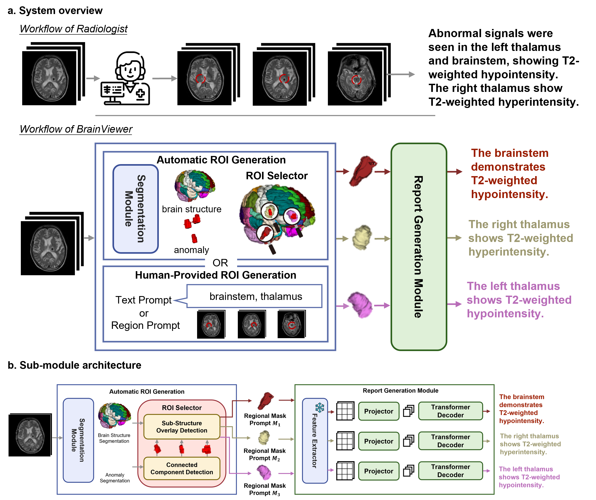
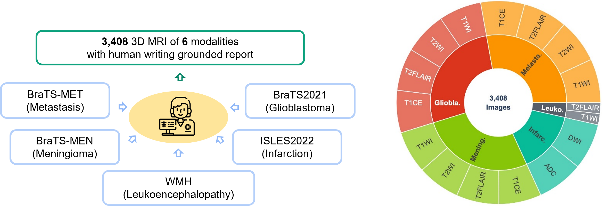
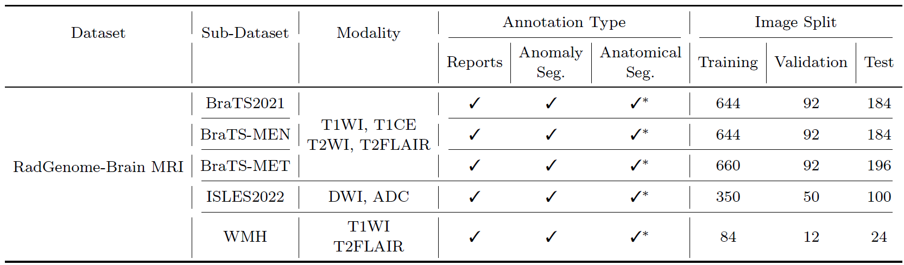
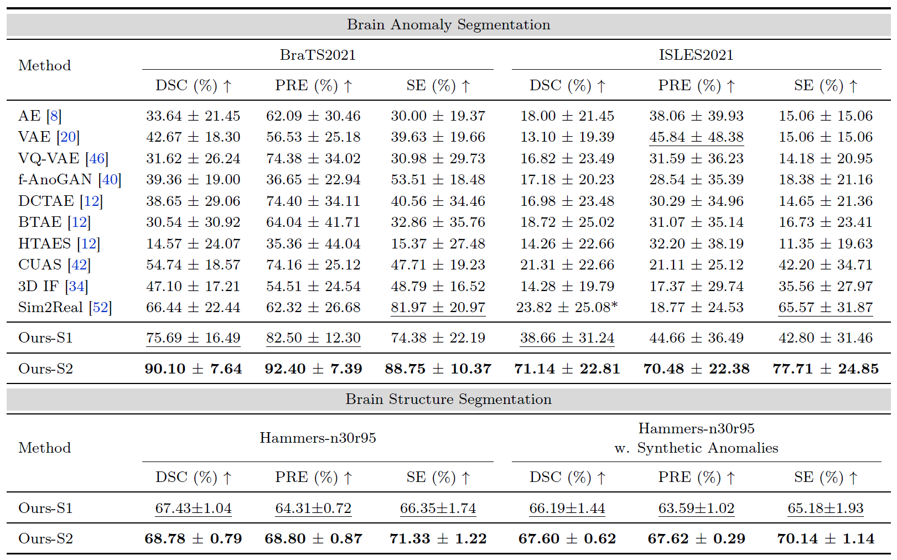
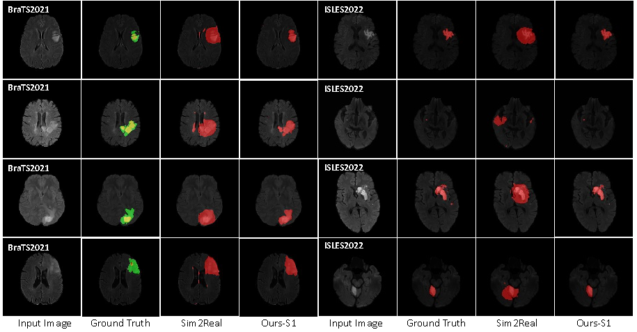
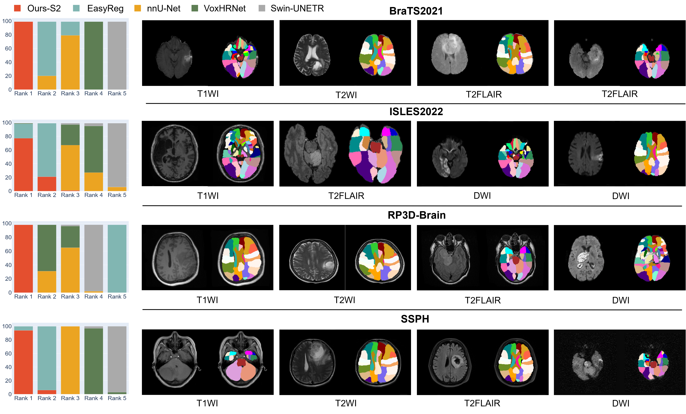
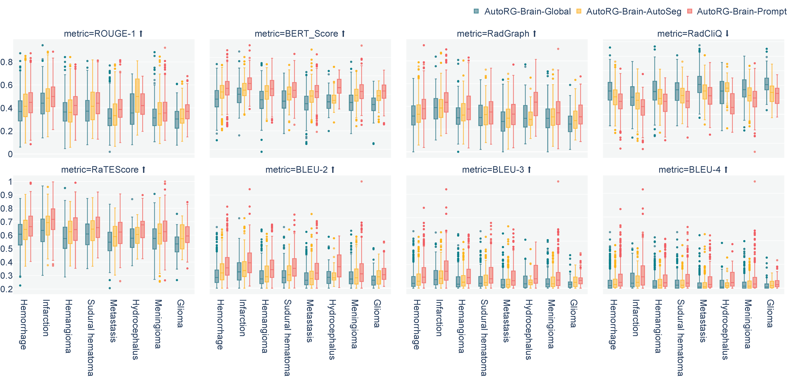
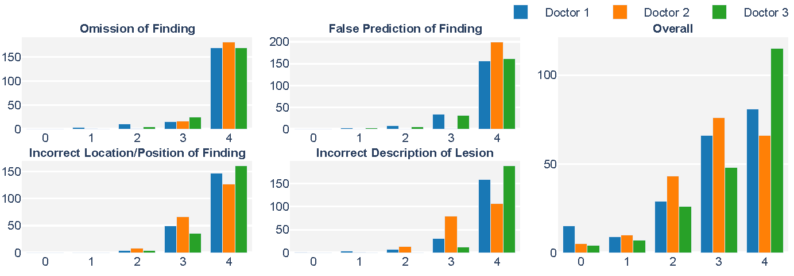
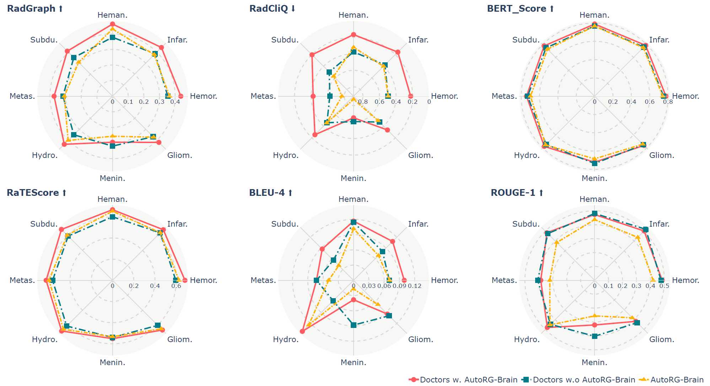

4Shanghai Sixth People's Hospital Affiliated to Shanghai Jiao Tong University
Abstract
Radiologists are tasked with interpreting a large number of images in a daily base, with the responsibility of generating corresponding reports.
This demanding workload elevates the risk of human error, potentially leading to treatment delays, increased healthcare costs, revenue loss, and operational inefficiencies.
To address these challenges, we initiate a series of work on grounded Report Generation (AutoRG), starting from the brain MRI interpretation system,
which supports the delineation of brain structures, the localization of anomalies, and the generation of well-organized findings. We make contributions from the following aspects,
first, on dataset construction, we release a comprehensive dataset encompassing segmentation masks of anomaly regions and manually authored reports, termed as RadGenome-Brain MRI.
This data resource is intended to catalyze ongoing research and development in the field of AI-assisted report generation systems. Second, on system design, we propose AutoRG-Brain,
the first brain MRI report generation system with pixel-level grounded visual clues. Third, for evaluation, we conduct quantitative assessments and human evaluations of
brain structure segmentation, anomaly localization, and report generation tasks to provide evidence of its reliability and accuracy.
This system has been integrated into real clinical scenarios, where radiologists were instructed to write reports based on our generated findings and anomaly segmentation masks.
The results demonstrate that our system enhances the report-writing skills of junior doctors, aligning their performance more closely with senior doctors, thereby boosting overall productivity.
Architecture
Our proposed AutoRG-Brain is the first regional brain MRI report generation system, that enables comprehensive segmentation of each anomaly region and generation of well-organized narratives,
to describe observations in different anatomical regions as shown in the Figure below. In more detail, AutoRG-Brain consists of two components, namely an automatic ROI generation component,
and a visual prompting guided report generation component. The former component provides auto-segmented region masks for detected anomalies or optionally human-prompted ROIs, serving as visual prompts for the latter report generation module,
enabling the regional-related reports accordingly. The paired visual grounding results and regional radiology reports allows the clinicians to efficiently review and revise generated reports based on visual clues,
significantly improving report writing efficiency. With the fast development of generalist medical AI (GMAI), our system can also serve as an agent to fill the gap of brain MRI interpretation within the GMAI framework.

Dataset
We curate a dataset for grounded report generation, termed as RadGenome-Brain MRI with 3,408 multi-modal scans, reports, and ground truth anomaly segmentation masks,
compiled from the publicly available datasets, for example, BraTS2021, BraTS-MEN, BraTS-MET, ISLES2022, and WMH, covering 6 modalities: T1-weighted, T2-weighted, DWI,
T2-Flair, ADC, and T1-contrast. For each patient case, we ask the radiologists to write findings and impressions for the annotated anomaly regions. To our knowledge,
this is the first open-source collection to provide paired images with detailed reports and anomaly segmentations.
In the experiment, AutoRG-Brain showcases the effectiveness of segmentation as a preliminary step to provide grounded visual clues for image interpretation.
We will release RadGenome-Brain MRI to the community, supporting future model training and evaluation.

The training, validation, and testing split along with the annotation types are shown in the Table below.
√ means having the ground truth label, √* means having the pseudo label.

Results
R1: Segmentation Module Evaluation
To our knowledge, our segmentation module is the first model that enables to segment both abnormalities and structures for multi-modal brain MRIs. Specifically,
the training undergoes two stages, with the first self-supervised training stage on our in-house dataset (SSPH),
and the second semi-supervised training stage on SSPH and 9 public datasets: BraTS2021, BraTS-MET, BraTS-MEN, ISLES2022, WMH, Hammers-n30r95,
ATLAS, BraTS-PED, and BraTS-SSA.

The comparison of AutoRG-Brain with baseline models on anomaly segmentation datasets BraTS2021,
ISLES2022, and brain structure segmentation dataset Hammers-n30r95. Ours-S1 is our segmentation module after the first self-supervised training stage and Ours-S2
is our segmentation module after the second semi-supervised training stage. We report the Dice Similarity Coefficient (DSC),
Precision (PRE) and Sensitivity (SE) scores. The best result is bolded, and the second best result is underlined

Examples of anomaly segmentation of Sim2Real and Ours-S1, our segmentation module after the
first self-supervised training stage, on the BraTS2021 and ISLES2022 datasets.

Comparison of our second-stage segmentation module (Ours-S2) with SOTA segmentation backbones and brain registration models on brain structure segmentation for multi-modal brain MRIs with real anomalies.
We evaluate these models on four distinct datasets, BraTS2021, ISLES2022, RP3D-Brain, and SSPH. Due to the absence of ground truth brain structure segmentation on those datasets,
we present the results based on human rankings on the left, where lower rankings indicate better outcomes.
R2: Report Generation Module Evaluation
We evaluate the report generation module under three settings: (i) AutoRG-Brain-Global: generating global report with global image
feature; (ii) AutoRG-Brain-AutoSeg: generating global report by concatenating the grounded reports
for auto-segmented regions; (iii) AutoRG-Brain-Prompt: generating global report by concatenating the
grounded reports with human prompting, i.e., specify the region of interest on the structure segmentation
results. The Figure below shows the efficiency of grounded report generation compared to traditional global report generation.
Further human evaluation shows the reports from AutoRG-Brain demonstrate the fewest or no clinically significant errors or omissions.

The comparison results between the ground truth global report and global reports written by AutoRG-Brain-Global, AutoRG-Brain-AutoSeg, and AutoRG-Brain-Prompt.
ROUGE-1, Bert-Score, RadGraph, RadCliQ, RaTEScore, BLEU-2, BLEU-3, and BLEU-4 are reported.

The global report generated by AutoRG-Brain-AutoSeg on clincal dataset SSPH is evaluated by three radiologists in four dimensions:
(i) Omission of finding; (ii) False prediction of finding; (iii) Incorrect location/position of finding;
(iv) Incorrect description of lesion. The scores of four dimensions are shown on the left with the overall score shown on the right.
The scoring is on a 4-point scale: 0 indicates more than three clinically significant errors or omissions, 1 indicates three clinically significant errors or
omissions, 2 indicates two clinically significant errors or omissions, 3 indicates one clinically significant error or omission, and 4
indicates no clinically significant errors or omissions.
R3: Evaluation on Real Clinical Scenario.
To evaluate the ability of AutoRG-Brain in real clinical scenarios, we integrate our system into the radiology
daily routines to assess its usefulness in the report writing process. The result shows that the integration of AutoRG-Brain
leads to significant improvements in report writing quality, especially on the most relevant metric to radiology report generation,
such as RadGraph, RadCliQ, and RaTEScore.

The comparison results between the ground truth report and reports written by AutoRG-Brain, doctors w.o
AutoRG-Brain, and doctors w. AutoRG-Brain detailed on various diseases (Heman.: Hemangioma, Infar.: Infarction, Hemor.:
Hemorrhage, Gliom.: Glioma, Menin.: Meningioma, Hydro.: Hydrocephalus, Metas.: Metastasis, Subdu: Sudural hematoma).
RadGraph, RadCliQ, Bert-Score, RaTEScore, BLEU-4, and ROUGE-1 are reported.